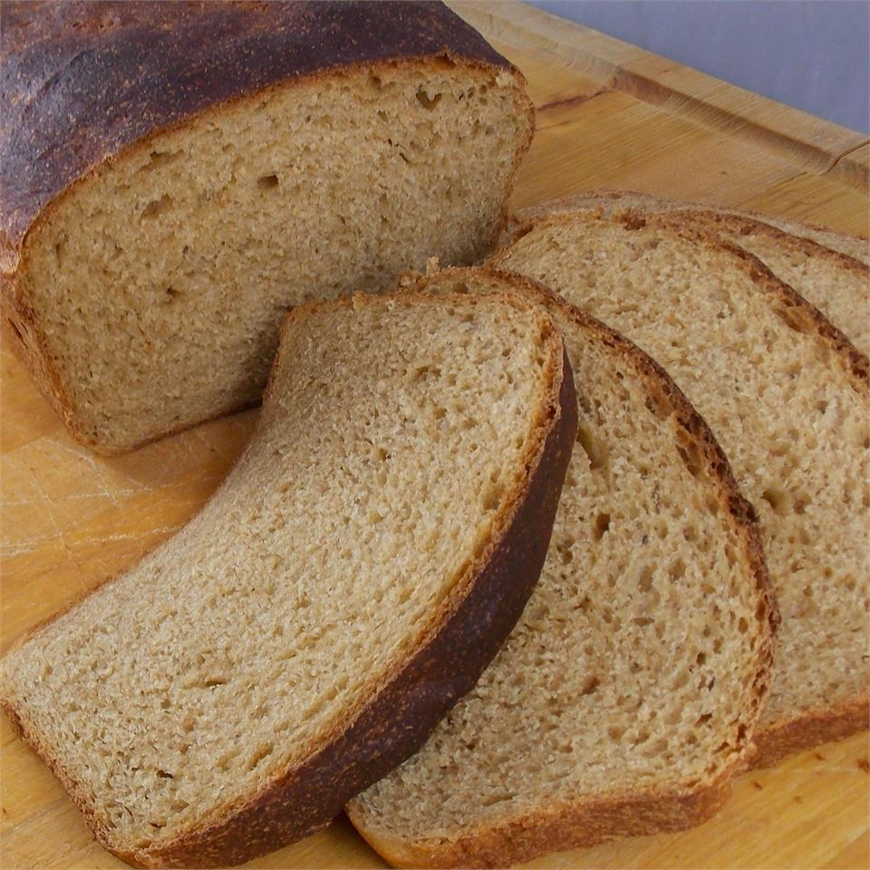

Swedish rye bread

This is excellent bread, so good it melts in your mouth!
Ingredients
- 1 1/2 (0.6 ounce) cakes compressed fresh yeast
- 1 1/2 cups warm water
- 1 1/2 cups warm milk
- 1 tablespoon salt
- 6 cups bread flour
- 1/4 cup molasses
- 1 cup packed brown sugar
- ⅓ cup melted shortening
- 3 cups rye flour
Steps
- Dissolve yeast in warm water.
- Scald milk. Transfer milk to a large bowl, and add salt, molasses, brown sugar, and melted shortening. Cool to lukewarm, and add dissolved yeast. Add rye flour, beating with mixer. Gradually beat in white flour. Place dough in a greased bowl, and turn to coat the surface. Cover with a damp towel, and allow to rise till double in bulk in a warm place.
- Punch down the dough, and place on a lightly floured board. Knead until dough becomes elastic, and does not stick to the board. Allow to rest for 5 minutes. Divide into 3 equal portions, and shape into loaves. Place in greased 9 x 5 inch bread pans. Let rise until double in bulk.
- Bake at 375 degrees F (190 degrees C) for 35 to 40 minutes.